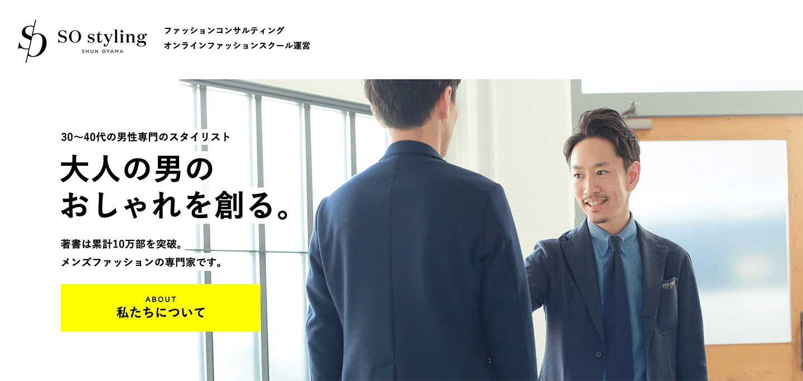

ファッションが苦手な男性を、最短でおしゃれに導くのが私たちの役割です。
私たちは短期間でファッションを改善するために
「2つのサービス」をご用意しています。
オンライン
ファッションスクール
自分で「おしゃれの方法」を学びたいという方に。
スマホやPCがあれば、いつでも好きな時に「おしゃれの方法」を学ぶことができます。既に1,000名を越えるユーザーが利用している、日本最大級のファッション学習サイトです。
個別
スタイリング
ビジネスの場面で印象力を高めたい経営者の方に。
メディア出演や人前に立つ機会の多い経営者・自営業の方へ。スタイリスト大山
旬があなたと一緒にショッピング。短期間でおしゃれなファッションを実現するサービスです。
スタイリスト
株式会社SO styling 代表取締役
アパレル販売職、転職アドバイザーを経て2009年5月に独立。一般人を対象に3,000名以上のファッション改善を行う。
現在は経営者に向けたファッションコンサルティングを中心に行っている。「自信を高めるためのファッション」をテーマにファッションの悩み解決に取り組んでいる。
これまでに6冊の本を出版。代表作は「最強の服選び(大和書房)」。著書は累計10万部を突破。また「めざましテレビ」（フジテレビ）、「おはよう日本」（NHK）、「読売新聞」、「AERA」など、メディアへの出演も多数。二児の父。
メディア情報

実際にファッションが変わった
お客様を紹介します。